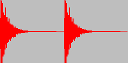
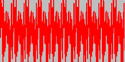

f05. Gabor — Adding a Matrix into MSP
The Gabor Objects
The Gabor objects—objects that begin with the prefix gbr.— are a collection of Max objects for processing FTM matrices as audio. They're particularly suitable for windowing and analyzing audio, as well as for exploring a variety of granular synthesis techniques. The Gabor objects provide a powerful interface between FTM data and MSP, including some things that are difficult to do well with just Max and MSP.
The Gabor objects are named after Dennis Gabor, who theorized the consideration of sound as particles, and whose work led to the exploration of granular synthesis—synthesizing sound by combining a multitude of small "grains" of sound. Thus, the gbr. objects particularly facilitate granular synthesis and related types of audio processing that require windowing small bits of sound with great temporal precision. That precision of timing is difficult to achieve in Max/MSP because of the disparate scheduling of Max messages and MSP audio, but certain Gabor objects help to resolve that discrepancy.
The overlap-add buffer
The gbr.ola~ object is a buffer for adding FTM matrix contents into MSP. You might think of it as a "buffer into the future". Whenever it receives a reference to a FTM matrix in its inlet, it adds the contents of that matrix into an internal buffer as audio samples for immediate MSP signal output—or, optionally, for signal output scheduled in the future. Matrices of sample data can thus be easily overlapped and summed within the gbr.ola~ object. (This object facilitates convolution filtering with the "overlap-add (OLA)" method, but it's useful for any application that requires mixing FTM matrices of audio data into MSP.)
One can provide FTM buffer references to gbr.ola~ from a ftm.mess (or any other ftm. object that outputs object references), but to provide matrices at a specified rate with very precise timing, there are some special gbr. objects. One such object is gbr.fire~, which uses MSP's audio sampling rate to determine timing, which can be specified either in samples or milliseconds, or as a rate in Hertz.
Adding sound or a grain into MSP
In the example patch, the fmat named asinewave is a persistent matrix containing 512 samples describing one cycle of a sine wave.
• Import some audio into the fmat named abitofsound. You can use the provided audio file 'snare.aif' (which contains a single snare drum note), or any other short audio file.
When MSP is turned on, the gbr.fire~ object provides the specified matrix to gbr.ola~ periodically at the specified rate. It is initialized to use the fmat asinewave and to provide that data to gbr.ola~ at a rate of 86.132812 Hz, which is to say every 11.61 milliseconds. You can think of gbr.fire~ as playing a grain of sound (the contents of the fmat) every 11.61 millieconds, and gbr.ola~ is the mixer that adds the grains together. The initial rate in this example was chosen specifically because asinewave is 512 samples long—which, assuming a sampling rate of 44,100 Hz, is 11.61 milliseconds—so the grains occur perfectly end-to-end and the result is a smooth continuous sine tone. However, any slower rate would cause the grains to be discontinuous, and any faster rate would cause the grains to overlap and interfere with each other. In either case the result will no longer be a sine tone; the resulting waveform will still be harmonic, but will be richer in spectral content. (To be specific, it will be a 86.132812 Hz sine tone multiplied by a 512-sample rectangular window, convolved with an impulse train at the new frequency.)
• Click on the startwindow message to turn on MSP, and turn up the volume with the gain~ slider. You will hear a smooth sine tone at first. Change the frequency of gbr.fire~ using the number box just above it to hear the effect of playing the grains more or less frequently. Try a sub-audio frequency such as 4 Hz to hear each grain individually.
The way of specifying the timing for gbr.fire~ depends on its unit attribute, so the three number boxes first trigger a change of unit, then provide the timing value.
• Click on the message 500 to cause gbr.fire~ to trigger a grain every 500 milliseconds. Now click on the message $abitofsound to change the matrix to which gbr.fire~ refers. You should hear the snare drum note—or whatever sound you imported into that matrix—played 2 times per second. Gradually bring the grain rate up into the audio range to hear a continuous tone made up of overlapping grains.
Here is a visual display of the snare drum note added into gbr.ola~ at a sub-audio rate, once every 500 ms, to create a rhythm, and (a zoomed-in view of) the same snare drum note added into gbr.ola~ at an audio rate, once every 10 ms, to create a continuous complex 100 Hz tone.
 
One second, with a 435 ms grain every 500 ms 1/10 sec., with grains overlapped every 10 ms
Grains and Windows
The grains in this example are short sound excerpts that are played unaltered by any tapering amplitude envelope. Each grain is thus equivalent to a continuous sound being multiplied by a "rectangular window" that lets the sound through (multiplies it by 1) for a short period of time but suppresses it (multiplies it by 0) the rest of the time. Different spectral effects can be achieved by multiplying grains by different tapering window shapes before adding them to the mix, as will be demonstrated in the next tutorials.
Summary
The Gabor (gbr.) objects in the FTM & Co. family provide an interface between FTM matrices and MSP, with more precise timing than is available with the normal Max scheduler. Most of the objects are designed with the granular approach to sound in mind, treating matrices as "grains"—short windowed segments—of sound to be used in short-term sound analysis and/or granular synthesis.
The gbr.ola~ object treats matrices as sound data to be added to a buffer sent out as an MSP signal. The gbr.fire~ object uses the MSP sampling rate to precisely time the periodic triggering of matrices for addition in gbr.ola~.